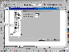
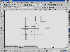

|
|
| 当前位置：电脑报电子版 > 1999 年 > 47 期 > OA专刊 > 打印超级大字 |
| 《 打印超级大字 》 |
| 如果你的打印机最大只能打印A4幅面，而你却因某种原因需要打印几米甚至几百米的超级特大字，怎么办呢?使用本文介绍的软件和方法，从理论上讲，可以打印无穷大的字。
一、准备工作 首先，你必需有一台打印机，喷墨、针打、激光均可，A2幅面的最好。其次，你还需要安装CorelDRAW矢量绘图软件，中文版、英文版都没关系。 本文就以CorelDRAW80简体中文版为例向大家介绍这种方法。 二、打印过程  1．打开CorelDRAW软件，新建一个文件。2．在“版面”菜单中选择“页面设置”，根据你的打印机选择好合适的纸张。一般来说软件默认的是A4纸，此时最好选择打印机能打印的最大纸张，如果受打印纸的限制，也可另外选择。 3．输入文字 (1）单击“添加文本”图标，在绘图区输入文字，如“电脑报”的“电”字。 (2）单击“挑选工具”图标，把文字拉伸放大，以便于观察。 (3）将文字处于点取状态。 (4)在“文本”菜单中选择“格式化文本”，再选择需要的字体。 (5）单击“轮廓工具”图标，在小三角形上拉出子图标，选择“1/2轮廓”。 (6）再单击“填充工具”图标上的小三角形，拉出子图标，选择“无填充”。 4．设置切割分页 (1）单击“多边形工具”图标的小三角形，拉出子图标，选取“图纸工具”。 (2）光标指向“图纸工具”图标按鼠标右键，选择属性，设置宽度方向和高度方向单元格数。此时注意作好计算。如我们要在A4纸上打印1m2大的文字，按照纸张大小计算结果： 宽度 1000mm÷210mm=476 高度 1000mm÷297mm=336 单元格取整数，设置宽度单元格为5，高度单元格为4，如图1所示。 (3）在编辑窗口画出4×5的方格，根据坐标把方格拉伸达1000mm×1000mm大小。选中文字，单击鼠标右键或者按“Ctrl＋Q”键，把文字转换为曲线，也拉伸到相应的大小。注意：为了防止字体变形，拉伸文字时要从文字框的四个角开始。 (4）选中文字，在“效果”菜单中，选“图框精确剪裁”的子菜单“放置在容器中”，单击调整好的方格，再把文字填入方格之中。 (5）选中对象，按鼠标右键，依次进行“取消群组”、“转换为曲线”操作。然后把方格拆开。 此项步骤也可不要，直接进行拖动打印，如图2所示。 三、打印  1．首先设定打印参数。根据页面设置的纸张大小，在“打印设置”中选好相同的打印纸张。2．在编辑窗口中，把拆分后的单元格依次拖到页面图框中进行打印。 3．最后按照次序把打印好的单页拼贴起来就可以了。 四、提示 1．使用A2纸注意：由于许多打印机最大宽度只能到33cm，所以每个单元格的宽度也不要超过这个值。2．CorelDRAW一次能编辑225m×225m的文字，如果使用多次切割，则可打印到无穷大，怎么样，很妙吧。(四川 李俊) |
| 下载本期推荐软件 | 页 首 |
| 《电脑报》版权所有，电脑报网站编辑部设计制作发布 |